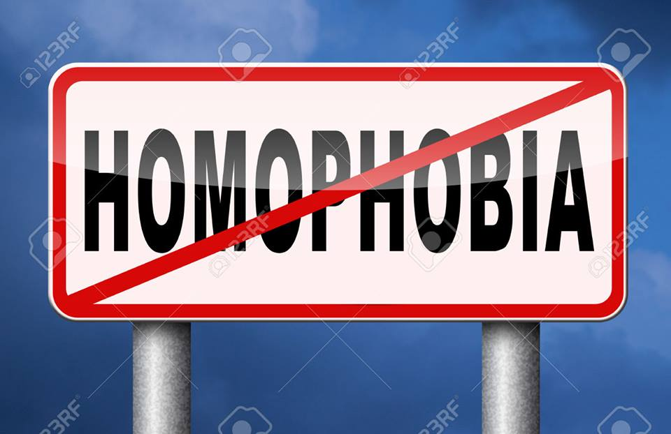

Como ya hemos dicho la situación en el mundo laboral ha estado marcada por una serie de progresos en los últimos años.. No obstante, hoy por hoy encontramos todavía demasiadas diferencias sexuales relacionadas con el trabajo, ya sea a nivel de ocupación o a nivel económico, por ejemplo. Así tenemos que la incorporación de la mujer al mundo laboral sigue un proceso creciente desde hace algunas décadas, pero la realidad pone en evidencia que su incorporación plena a todos los derechos sociales y económicos es considerablemente deficitaria. Los datos nos demuestran como las mujeres no se han incorporado todavía , en la misma medida que los hombres , cómo sus contratos son los más deficitarios y cómo su salario es menor por un trabajo de igual valor. El tema de las remuneraciones económicas es de los temas más polémicos en cuanto a las diferencias laborales entre hombres y mujeres,.
Aunque ha aumentado el número de mujeres profesionales en el sector de las comunicaciones, son pocas las que ocupan puestos directivos que puedan influir en la política de la información. La persistente idea de estereotipos sexistas se debe en gran parte en la proyección a través de los medios de comunicación de imágenes negativas y degradantes de las figuras de las mujeres. Es muy significativo analizar cómo se transmite la imagen de las mujeres a través de los medios de comunicación: Estos son unos datos objetivos sobre el papel del mundo en el área de la comunicación: En la publicidad, su rol normal es condicionados al objeto que se vende. La característica de los cuerpos femeninos son utilizadas con mayor frecuencia que las de los masculinos.. La mujer está presente en los medios de comunicación en gran medida y en muchos casos al mismo nivel que el hombre. Sin embargo su presencia es selectiva y pone de manifiesto cierta discriminación sexual. Las mujeres tienen una presencia mayor en las teleseries y en los concursos, además de la publicidad, En cambio los hombres en los deportes y en la información.
Las personas que son víctimas de homofobia son rechazadas, en el trabajo, escuela y en sus propios hogares. Se manifiesta endespidos, exclusión educativa, rechazo religioso, negación de servicios, estereotipos y estigmas reproducidos por los medios de comunicación, humillación, rupturas familiares, abandono, invisibilidad, violencia y, en casos extremos, hasta la muerte. Su contra cara es el respeto a la diversidad que implica comprender que todas las personas tienen el derecho a realizar su proyecto particular de vida; que todas las personas pueden ejercer los derechos y libertades reconocidas; y que todas gozan de la protección de las instituciones públicas, sin ninguna distinción.